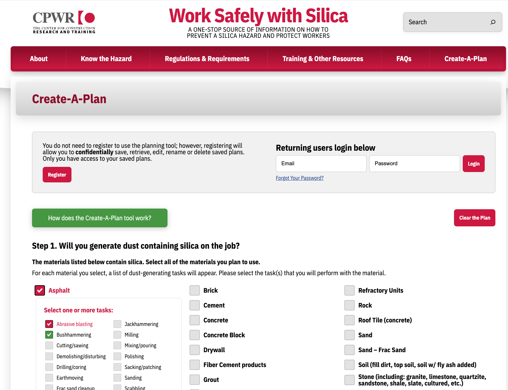

CPWR
Silica-Safe planning tool
Built from the ground up: a WordPress site that helps contractors plan for working safely with silica-producing materials. Its centerpiece is a fully custom planning tool that walks users through a multi-step form and generates a detailed safety plan for their specific circumstances, with links to official guidance. Users can save plans to an account, export them to PDF, or email them.
- URL
- silica-safe.org
- Stack
- WordPress · custom plugin · PHP · JavaScript · MySQL